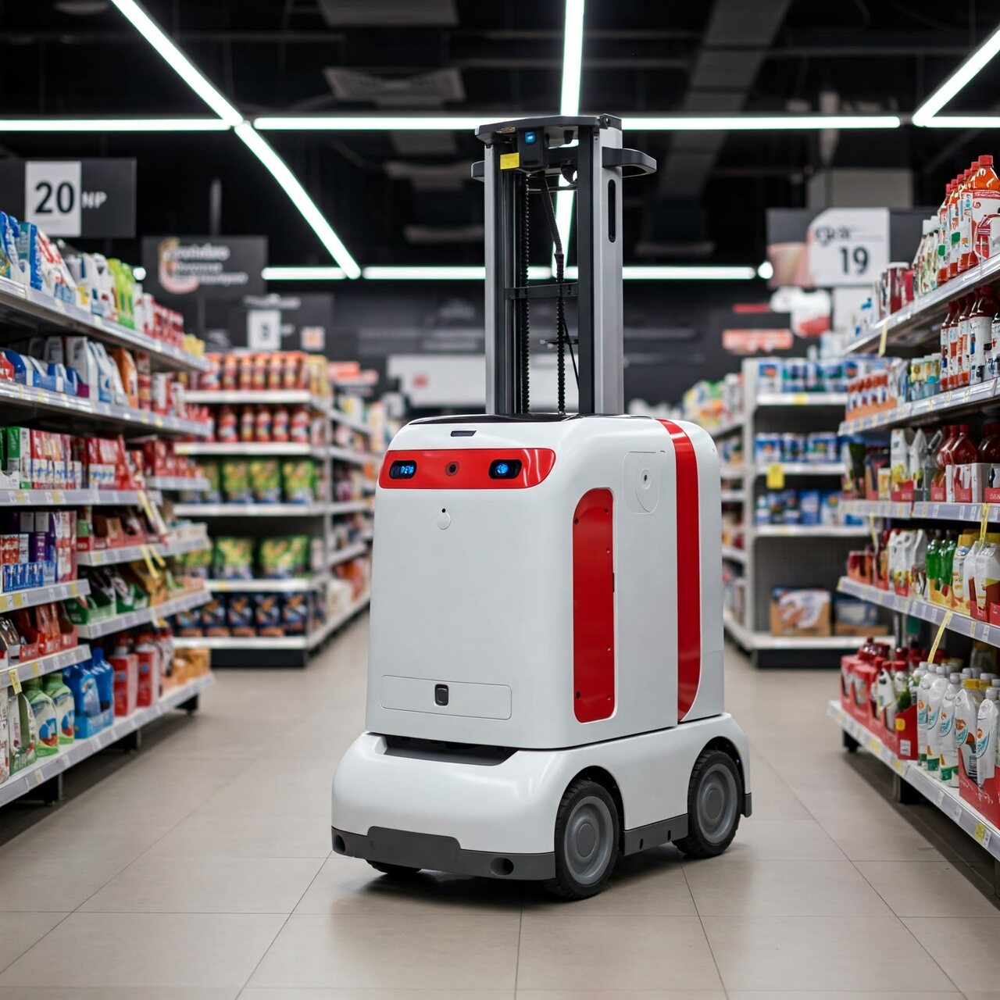
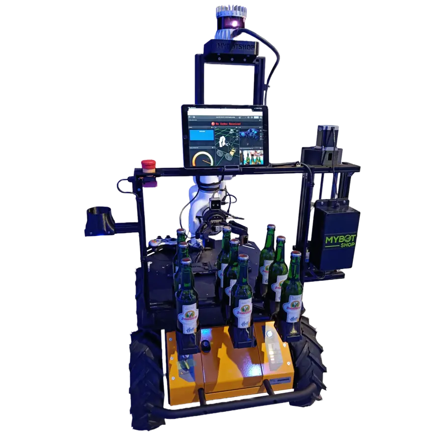
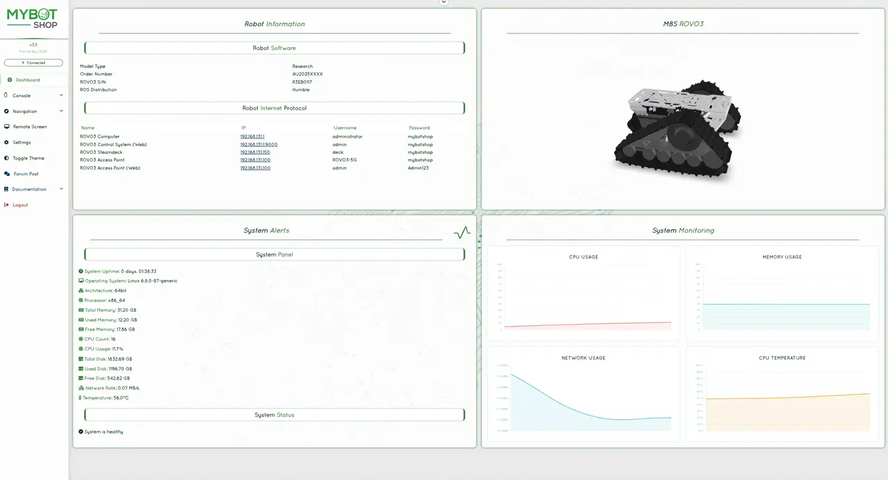
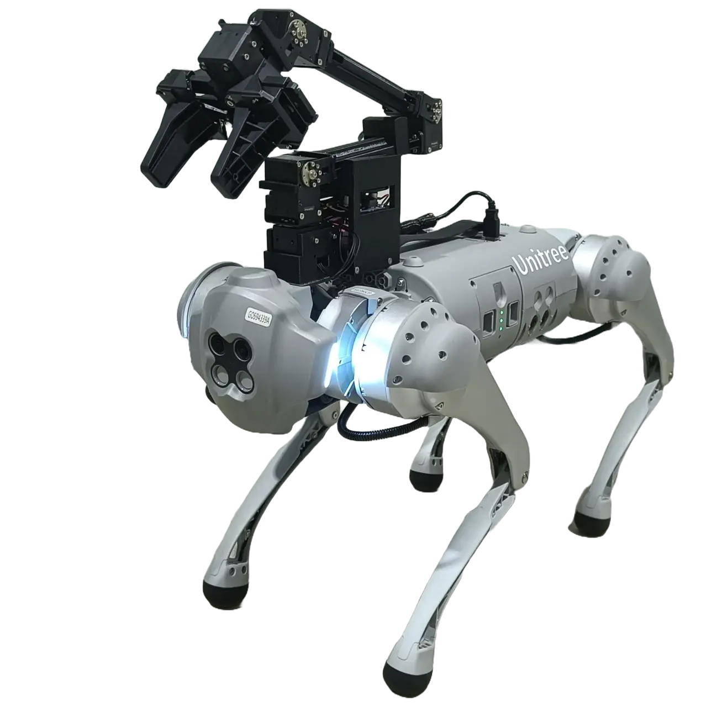
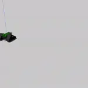
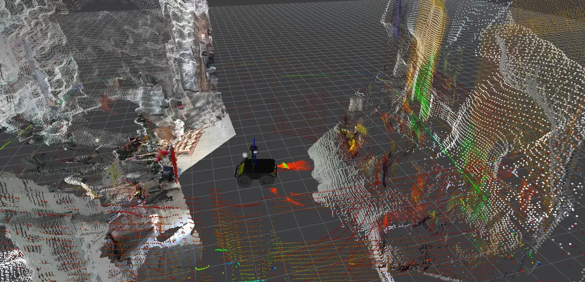
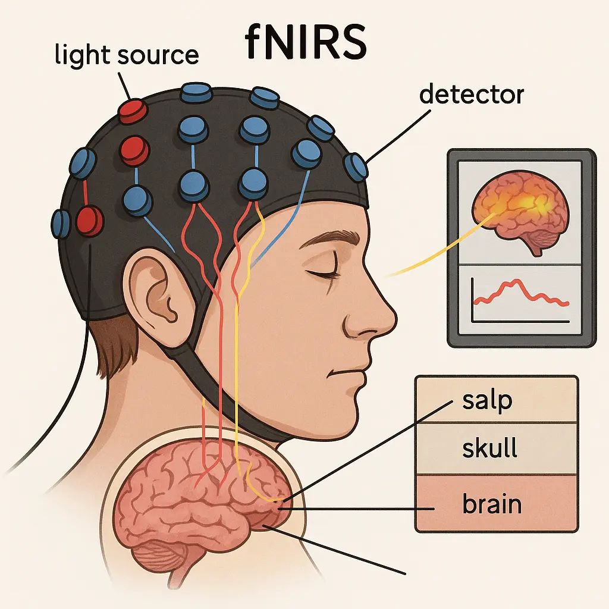
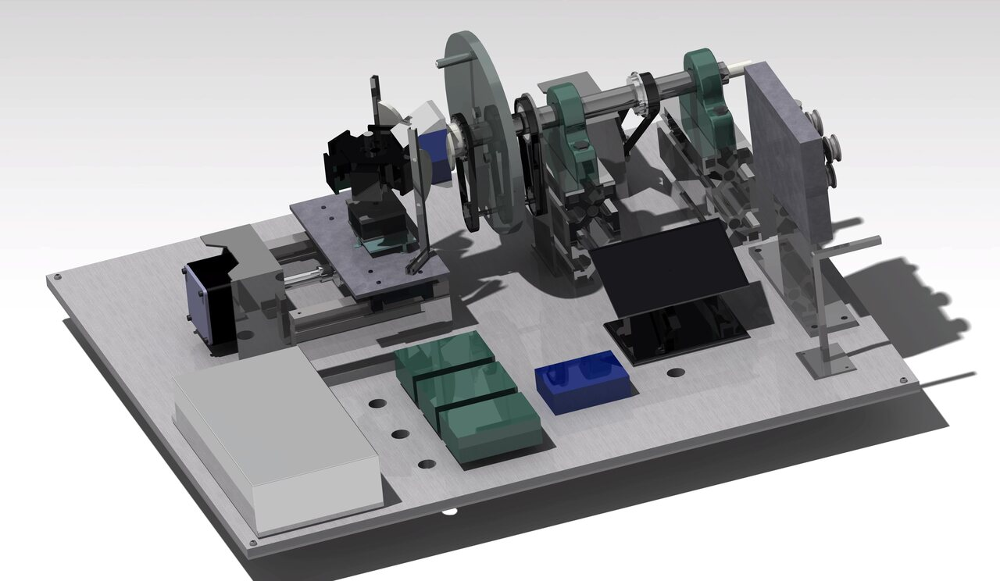
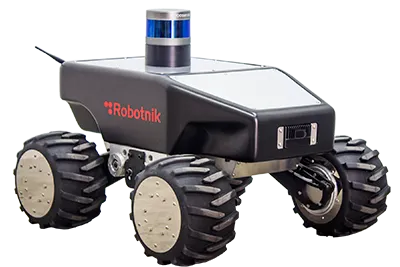
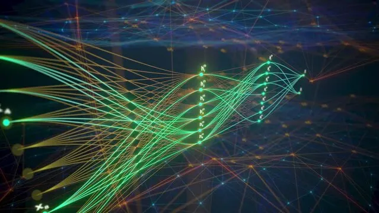

Unitree G1 Humanoid
ROS2 integration for G1 humanoid with live teleoperation from a browser dashboard — real-time 3D digital twin, LiDAR point-cloud viz, Nav2 navigation, GPS waypoints, and joint-level control.

Browser-based · Robot-agnostic
After almost two years of development, a clean, reliable, browser-based interface for operating, monitoring, integrating, and extending robotic systems across mobile robots, quadrupeds, and humanoids. Designed to be platform-agnostic with hooks for client-specific modules. Footage shown is sped up 8× from a local test setup.
ROS2 integration for G1 humanoid with live teleoperation from a browser dashboard — real-time 3D digital twin, LiDAR point-cloud viz, Nav2 navigation, GPS waypoints, and joint-level control.
Browser-based, robot-agnostic control suite — ROS 2, Nav2, MoveIt2, SLAM, patrol routes, no-go zones, LLM workflows, telemetry, and e-stop. Footage sped up 8×.

ROS2 Jazzy stack for Clearpath Ridgeback with dual xARM850, Robotiq 2F-140 grippers, and 3-axis rig. MoveIt2 motion planning, Nav2 navigation, Ouster LiDAR, ZED2i integration.

Automated apple packaging with xARM6 and ZED2i depth camera. Color-based orientation detection, compliant control, MoveIt2 planning with Robotiq grippers.

ROS2 Jazzy tracked robot with CAN bus (500kbps), IMU fusion odometry, web interface with 3D GLTF viz, VNC streaming, Nav2 integration.

GPS-based patrol for Jackal UGV using Nav2, LIO-SAM SLAM with Ouster LiDAR, Steamdeck joystick interface, web dashboard for mission planning.

Unitree Go2 quadruped for tunnel inspection with LiDAR, thermal camera, gas sensors. 3D mapping pipelines for survey documentation in hazardous environments.

Unitree A1 gait planning with TOWR optimization framework, CHAMP controllers, real-time visualization tools for terrain navigation.

Husky A200 with 12+ sensors for precision agriculture. Ouster LiDAR, Fixposition GPS, web interface, Nav2 for systematic field coverage.

Autonomous retail robot for customer guidance. Nav2 navigation, multi-sensor perception, web dashboard for fleet management.

Unitree H1/G1 ROS2 drivers with Livox LiDAR, GPS waypoints, Steamdeck teleop, RL locomotion deployment, web dashboards.

Husky + xARM for automated beverage preparation. MoveIt2 planning, dispensing algorithms, ROS2 service-based order management.

ROS1 Noetic 4-arm teleop with Interbotix/Dynamixel, RealSense D405 cameras, master-follower control for imitation learning.

ROS2 Humble drivers for 6-DOF hand. Modbus/RS485 communication, position/force/speed control, calibration procedures.

ROS2 Humble firmware for wheeled-bipedal robot. Livox Mid360, Fixposition GPS, Gazebo Fortress sim, Steamdeck teleop.

Flask platform for 15+ robots. Three.js 3D viz, virtual joystick, GPS waypoints, rosbag capture, VNC access, Cython optimized.

Unitree A1/Go1/Go2/B1/B2 drivers. CHAMP controllers, LIO-SAM SLAM, Nav2, Open Manipulator, Gazebo sim, online docs.

ROS2 Foxy/Humble integration for Unitree Go2. Livox Mid360, GPS waypoint nav, Steamdeck controller, AprilTag detection.

ROS2 Humble stack for Unitree B2 series. Livox LiDAR, web dashboard, multi-machine ROS setup, industrial inspection applications.

Clearpath Ridgeback R100 integration. Nav2 navigation, Ouster LiDAR, mecanum drive control, web interface, URDF modeling.

Clearpath Dingo D100 with Piper arm integration. ROS2 Jazzy, MoveIt2, indoor navigation, web-based control interface.

ROS2 Humble integration for Agilex Hunter. CAN bus driver, Ouster LiDAR, uBlox GPS, Nav2 navigation, web dashboard.

Clearpath Husky A300 with advanced sensor suite. ROS2 Jazzy, Fixposition GPS, multi-LiDAR setup, web interface.

Clearpath Warthog integration for outdoor heavy-duty applications. Nav2, Gazebo simulation, rugged terrain navigation.

Universal Robots UR5e on Ridgeback. ROS2 Jazzy driver, MoveIt2, Robotiq gripper, lift mechanism, pan-tilt camera.

ROBOTIS Open Manipulator on Go1/Go2 quadruped. ROS2 Foxy drivers, Dynamixel control, mobile manipulation demos.

Gazebo Fortress/Harmonic sims for all platforms. ros2_control integration, sensor plugins, physics tuning, CI/CD testing.

LIO-SAM, FAST-LIO, and slam_toolbox integration. Multi-LiDAR fusion, loop closure, map saving/loading across platforms.

Unitree Go1 with ROS1/ROS2 bridge. CHAMP gait controller, RSLidar integration, multi-machine setup, Gazebo sim.

ROS2 driver development for Spot robot. SDK integration, autonomous navigation, sensor payload management.

Kinova Gen3 arm integration with ROS2. MoveIt2 planning, force-torque sensing, compliant control modes.

Franka Panda integration for research. libfranka driver, impedance control, real-time control loops.

Wheeled-legged Diablo robot integration. ROS2 drivers, balance control, teleoperation interface.

UFactory xARM5/6/7/850 ROS2 drivers. MoveIt2 configs, gripper control, vision-guided picking applications.

R&D that automates robotic standards validation through simulated testing, verifying compliance, identifying missing functionalities and software bugs in heterogeneous robots.

Functional near-infrared spectroscopy (fNIR) detected finger taps from brain with a 92% test accuracy using a Deep Neural Network.

Design and fabrication of an automated wireless coil-winding machine for stator coils of 70cc motorcycles.

Research and development of automated property-based testing for the Toyota HSR robot’s perception, manipulation, and navigation stacks.

Implementation of a fault-tolerant manager that detects errors within the Summit XL robot and executes the recovery process during a mission around an airport.

Development of entity detectors, image classifiers, text-extractors, text-summarizers, chatbots, form-fillers, text-preprocessors and more.